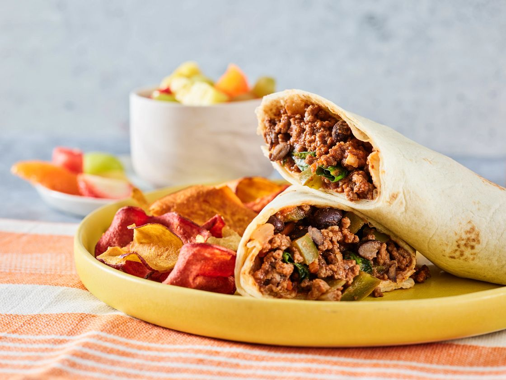

Wrap Recipe

Description
This delicious homemade wrap is packed with fresh vegetables, tender chicken, and a creamy dressing, making it a perfect lunch or snack.
Ingredients
- 2 large tortilla wraps
- 1 cup cooked and shredded chicken
- 1/2 cup shredded lettuce
- 1/4 cup diced tomatoes
- 1/4 cup sliced cucumbers
- 1/4 cup shredded cheddar cheese
- 2 tablespoons mayonnaise or ranch dressing
- Salt and pepper to taste
Steps
- Warm the tortilla wraps in a skillet or microwave for a few seconds to make them pliable.
- Spread mayonnaise or ranch dressing evenly over each tortilla.
- Layer the shredded lettuce, diced tomatoes, sliced cucumbers, shredded chicken, and cheddar cheese on the tortillas.
- Season with salt and pepper to taste.
- Carefully roll up the tortillas, tucking in the sides as you go to form a wrap.
- Slice the wraps in half for easier serving, if desired, and enjoy immediately.